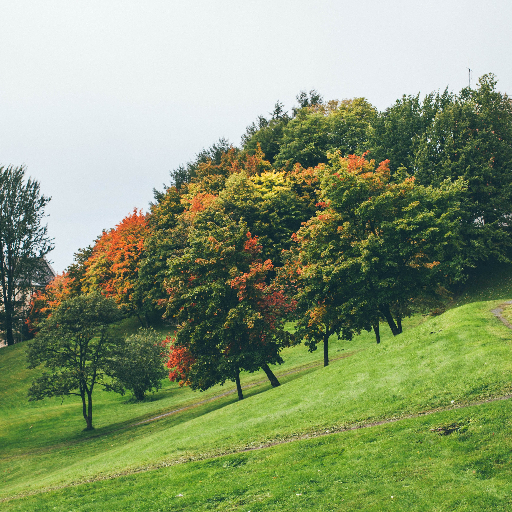
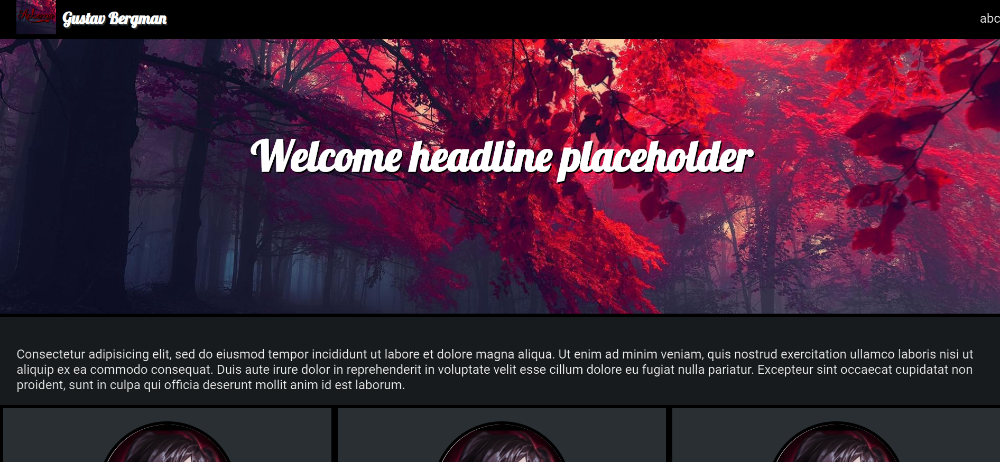
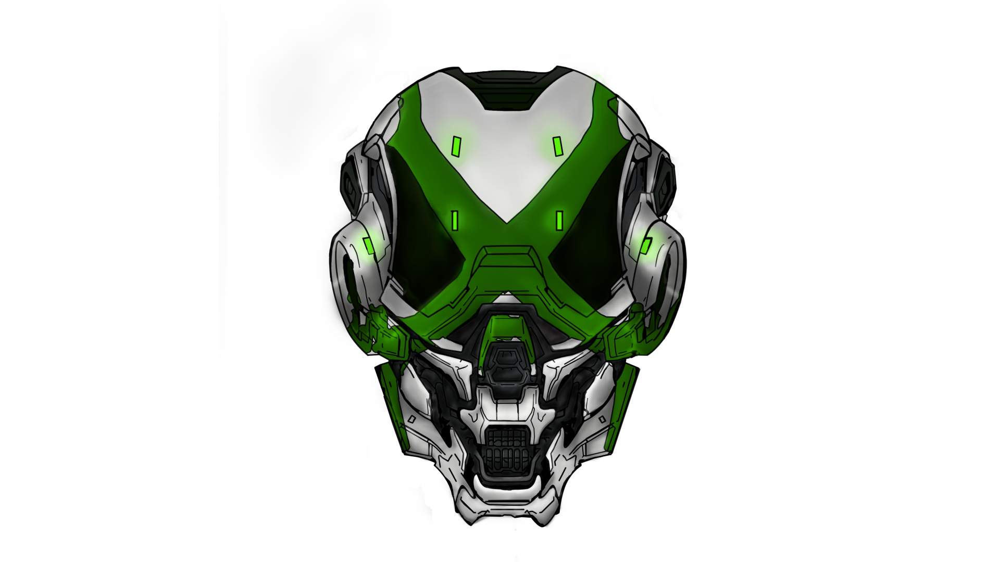

Hi, I'm Gustav.
I am a Front-end Developer.
Photo Credits: Maren Sandvold ©
Introduction
Hi, My name is Gustav Bergman and I am currently studying to become a Front-end developer. Welcome to my online portfolio! This portfolio is a part of the first individual project assignment but it's something i will keep working on over time as the course continue.
Here you'll be able to read a little about me, what i do, what i've studied previously and the courses i've taken. But also to view previous work. On top of that you'll find some info about me personally. What i like to do on my spare time, hobbies, interests, you name it.
The purpose of this website is also to provide a way for me to showcase what i can do and what i learned so far through out the education while i simultaneously work toward learning new things and improving upon the base knowledge i already possess. Which i then can implement to the website in the future.

Photo Credits: Maren Sandvold ©
Portfolio Gallery
Here are a few (Keyword being "few") of my previous projects. One project from a previous webdeveloper course and one project from a "Graphic design" course. I don't have much to show yet unfortunately due to issues i had with the computer i used at the time. Almost all of the data, projects and workfiles were lost. But hopefully i can fill this gallery up over time and improve on its design to better fit a larger quantity of projects.
Without further ado, let's get into the projects!
Project 1: Webdeveloper course, End project.

Warning: This is not the actual project, the original screenshots of the finished work were lost due to PC issues i had at the time.
This was the big main project we had in the end of our "Webdevelopment" course. We had the task to create a website using html, css, php, Mysql (database) and JQuery/Javascript. For me personally it was very similar to this project since i decided to make a portfolio/online resume.
I went with a pretty standard and simple design with a navbar in the top with links to my portfolio gallery, about me, contact info etc. Then i had a slider on the index page which featured images from diffrent projects in the portfolio as "banner". then i had a centered "main" div which featured the main content on the side and last but not least, a full width footer at the bottom of the page.
To specify some features i had which doesnt show on the image i had a admin page with a upload form where i could upload projects. The form consisted of 4 fields where i filled in the preview image and text as well as the full image and text if you clicked on a specific projekt. The upload form validated file size, type, image proportions, text etc.
The project was finished and hosted live in 2014 fully validated without errors in Html and CSS.
Project 2: Digital Creations course, Major project.

The "Locus" helmet from the video game "Halo 4" drawn and colored in Photoshop. Copyright ©
This was the biggest project i made during my digital creations course. We were assigned to draw a image and color it in Photoshop. I choose to combine this project with my Webdeveloper project and made the images that was going to be featured in my slider/project gallery on my online portfolio. I Choose to draw a helmet featured in the game "Halo 4" called the "Locus" helmet. I used a reference image to help draw the contures of the helmet and the position of some of the details.
Appart from making some of the outlines/contures with a reference image i manually colored, shaded and highlighted the image by "hand" using photoshop. The project took a really long time, manily due to the fact i learned alot of new techniques along the way which i implemented in the image. I would guess the image, from start to finish took about 3-4 months.
About Me
About me
Hello there! My Name is Gustav Bergman and im 23 y/o and currently studiyng Front-End Developer in Stockholm, Sweden. I've been really interested in Front-end/webbdevelopment eversince my first webbdeveloper course in school.
I thought it was really cool and a bit "hacker" like to create websites. In front-end you have a visual representation of what you're doing/creating.
Which i enjoyed a lot and the creativity it brings both in the diffrent ways, solutions, design and structure. I previously studied It Technology with media focus.
So, here are some courses related to Front-End that i have studied prevoiusly.
Webbdeveloper 1
Webbdeveloper 2
Programming 1
Programming 2
Graphic Creations/Design
User Interface Design
I also enjoy drawing and editing pictures and make my own twist on the original. I'm not very good at drawing by hand (Totally don't use reference pictures, shhhhh!) so photoshop is
a great tool for me since i have a lot of tools/features to help out. I enjoy design in general so i lean more towards designer when it comes to front-end as well.
I'm really looking forward to learning more about animations, transitions and diffrent effects and techniques to give some spice to the website.
In my spare time i'm the stereotypical "Nerd". I Watch movies, series, streams and game whenever im not studying or drawing.
When it comes to games i play pretty much anything and everything. Anything from fps shooters and MMO's to racing & rythm games. Also play on both console (Xbox) and PC.
Currently i mostly play WoW (Where i Raid in a Mythic guild), Overwatch and Osu!.
If you're not familiar with the games there are info links below:
World of Warcraft
Overwatch
Osu!